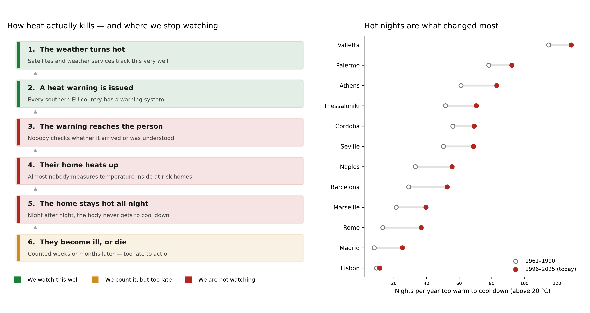

The blind spot sits where people could still be helped
Scoring 15 stages from emission to health outcome, four come out effectively unmeasured: whether a detected leak was fixed, indoor heat, what people did after a warning, and whether adaptation spending worked.